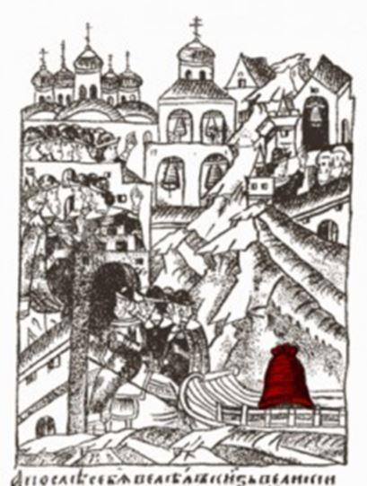
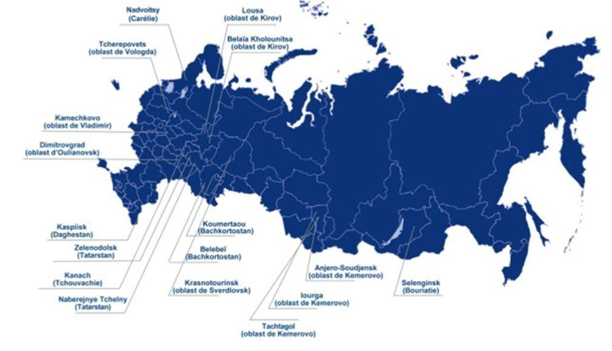
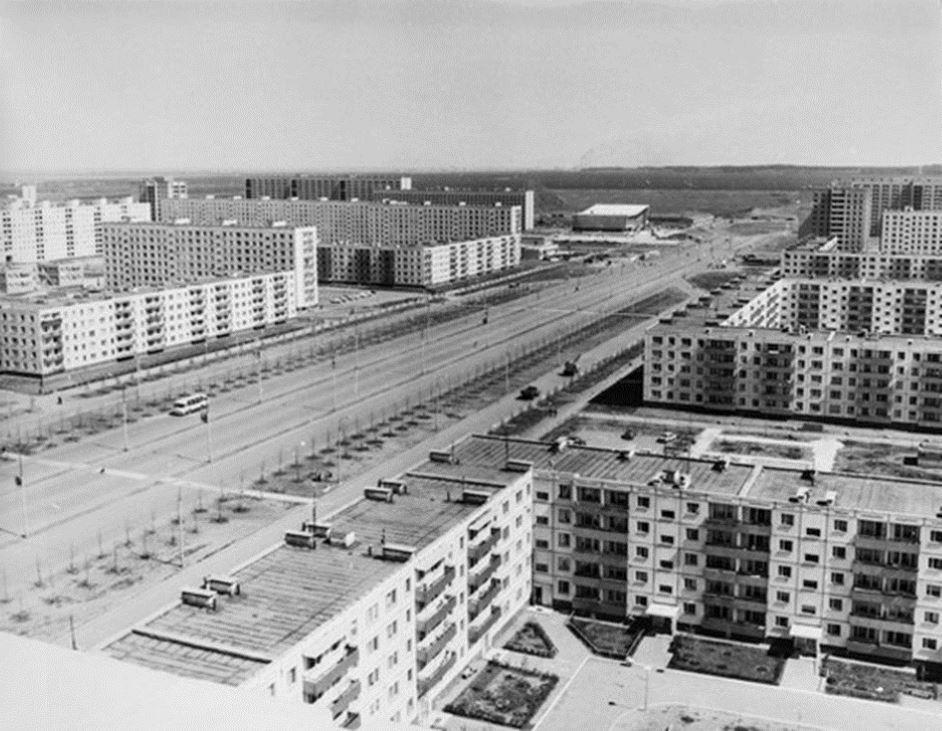

Bombes à retardement génératrices de troubles sociaux et politiques, boulets économiques et budgétaires, les villes mono-industrielles comptent pour 30 % du PIB russe. Le gouvernement n’étant pas disposé à les soutenir à coups de subventions, les pousse à chercher de nouveaux modes de développement.
Le phénomène des monovilles a été inhérent au capitalisme de la seconde révolution industrielle. Detroit, Sochaux, Thionville, Florange, Le Creusot, Turin… sont — ou ont été — des monovilles, plus précisément des villes mono-industrielles dont l’activité repose sur une seule industrie et dont les habitants n’ont qu’une seule compétence. Le phénomène est propre à l’économie de la production de masse en silo, où la grande entreprise est le mode courant de recherche de gains de productivité. Ce mode de production est devenu obsolète avec la transition vers la troisième révolution industrielle, qui repose sur des activités à plus forte intensité technologique, diversifiées, avec des connexions en réseau d’entreprises moyennes, même si elles peuvent rester organisées autour d’une grande entreprise-cœur à la taille plus réduite, et où l’innovation et la diffusion de la connaissance jouent un rôle critique.
LE POIDS DE L’HISTOIRE
La ville russe a des caractéristiques spécifiques qui puisent leur origine dans l’histoire économique et sociale de la Russie. Il n’y a pas eu de civilisation urbaine en Russie comme en Europe : il n’y a pas eu dans le système autocratique russe de civilisation urbaine porteuse de libertés communales et d’une vie urbaine autonome liée au développement commercial, industriel et politique. Et ce, paradoxalement, alors que la Russie fut porteuse de la forme la plus accomplie de démocratie directe et de liberté urbaine avec l’institution du vétché dans les villes de Pskov et de Veliki Novgorod, institutions qui furent écrasées par le tsar Ivan III en 1478. Dès lors, la ville russe se distingua peu de la campagne, ne se détachant pas du pouvoir féodal.
Les effets sur le développement urbain de la croissance industrielle de la fin du XIXe siècle furent anéantis par la guerre civile et la disparition physique du peu de classe ouvrière historique, avec l’effondrement démographique des villes dans les années 1920, qui fut suivi d’un développement intense durant la période soviétique d’industrialisation. Mais celui-ci fut, selon l’expression d’Anatoli Vichnevski, une « faubourgisation » de la ville, peuplée de paysans, d’où les dirigeants soviétiques ne voulaient voir naître à aucun prix une quelconque émancipation urbaine. Pour Vichnevski, la révolution russe et l’industrialisation de la Russie furent une « modernisation conservatrice ».
La notion de système urbain, en tant que système autonome de vie et de développement, fut donc absente de l’histoire russe avant et pendant la période soviétique. La conception de la ville a été unifonctionnelle : il s’agissait de fournir des « machines à habiter » à côté de machines à fabriquer.
Les monovilles sont nées à la fois du capitalisme d’État autoritaire qui fut celui de l’URSS, de la spécificité de l’histoire sociale russe et des contingences historiques et géographiques. Les monovilles se sont créées près des ressources en matières premières, en Sibérie, dans l’Oural, dans l’Arctique, dans une économie basée essentiellement sur les activités primaires. Certaines furent initialement des goulags, comme Norilsk. Elles ont aussi résulté du déménagement des industries menacées par l’avance allemande en 1941 et de leur relocalisation vers l’Est, ce qui fut un exploit remarquable.
UN COÛT ÉLEVÉ ET UNE MENACE
Selon un recensement officiel, il existe aujourd’hui 332 monovilles en Russie, chiffre qui va, selon les décomptes, jusqu’à 400. Elles regroupent 15 % de la population russe et comptent pour 30 % du PIB. Toutes ne sont pas en crise : Norilsk, dans l’Arctique, reste l’un des plus grands centres de production mondiaux, pesant 2 % du PIB russe — et la ville la plus polluée et polluante du monde. À Togliatti, le Detroit russe, Renault a repris l’usine Avtovaz et a pour charge de la redresser. Ces villes sont des villes-entreprises, avec une administration municipale faible, sans grande compétence ni autonomie. Si l’activité économique va mal — la crise de 2008 a frappé fort en Russie —, l’entreprise n’investit plus dans les infrastructures, les salaires baissent (ils ont baissé de 14 % après 2008), l’habitat se dégrade et la ville entre dans un cercle vicieux de dépérissement.
Les monovilles deviennent donc des bombes à retardement, génératrices de troubles sociaux et politiques. Le gouvernement fédéral a apporté l’équivalent de plus de 5 milliards de dollars au soutien des monovilles, mais en expliquant qu’il en laisserait dépérir une majorité. Un destin « à la Detroit », en quelque sorte. Et au-delà de cette dimension conjoncturelle de gestion de la crise sociale, se profile celle de la reconversion de l’économie russe vers une économie de la troisième révolution industrielle.
UNE POLITIQUE ACTIVE DU GOUVERNEMENT RUSSE
Il ne peut être question de maintenir ces monovilles à coups de subventions, comme le firent — et le font encore — des politiques inadaptées. En France par exemple, on a retardé la reconversion de la sidérurgie lorraine par des subventions. Le rôle des financements publics y a été positif en ce qu’il a maintenu un outil industriel performant, mais très coûteux par le retard apporté à la reconversion et par son coût économique et social, à travers la CGPS (convention générale de protection sociale dans la sidérurgie), qui a été considérable. Néanmoins, la transformation du modèle d’affaires de la sidérurgie et l’évolution de ses processus de production, en en faisant une entreprise, accompagnée d’un début de renaissance urbaine, furent une réussite.
En 2014, le gouvernement russe a créé un fonds pour le développement des monovilles1, organisme à but non lucratif dont la mission est d’aider les monovilles à développer un nouveau modèle industriel. Sa politique repose sur deux principes :
1. Ne financer que des nouveaux projets qui ne soient pas liés à l’entreprise cœur de la monoville, avec une participation de la ville à hauteur de 5 %, partenariat de principe compte tenu de la faiblesse financière des monovilles. S’il y a prise de participation du fonds dans les nouvelles entreprises, celle-ci doit rester minoritaire, à 49 % maximum. Les projets concernent des infrastructures nécessaires à l’accueil de nouvelles entreprises. Soixante-deux régions ont signé un accord avec le fonds fin 2016.
2. Cet apport en capital industriel est renforcé par un développement du capital humain via la formation d’équipes de projet composées de représentants des régions et des entreprises. Deux cent vingt-sept équipes auront terminé un cursus de 250 heures à Skolkovo fin 2017.

Projets de cofinancement des monovilles (au 1er mars 2017)
L’intérêt de cette approche est qu’elle sort du subventionnement de survie pour créer des conditions de développement de nouvelles activités par les villes concernées, à la différence d’une logique d’assistance et de pilotage direct depuis le centre, qui a été la norme en Russie depuis bien avant l’époque soviétique, pratiquement depuis Pierre le Grand.
La diversification industrielle est notamment recherchée par le développement des technoparcs, qui se veulent une reproduction de la politique des clusters, unissant PME, grandes entreprises, universités et banques de financement dans un même écosystème. Une telle approche est de nature à stimuler une véritable dynamique de développement territorial. Elle connaît des péchés de jeunesse qui, malgré les progrès réalisés, ne sont pas encore résolus à ce jour : lourdeur des structures qui sont parfois des vitrines pour obtenir des subventions (phénomène connu en France avec la politique des pôles de compétitivité), sans valeur ajoutée scientifique et industrielle, rigidité de la bureaucratie cloisonnée héritée de l’époque soviétique, absence de système bancaire spécialisé et persistance d’une certaine corruption, système juridique peu développé pour garantir les droits de propriété. Le cadre institutionnel est encore incomplet, malgré des réussites spectaculaires comme le technoparc de Novossibirsk.
L’approche qui consiste à considérer le développement urbain et l’industrialisation comme une dynamique endogène, et non plus résultant d’une initiative centrale exogène, est encore en gestation en Russie. La création de ce qui devait être la Silicon Valley russe à Skolkovo s’est révélée très décevante. On a fait un copier-coller des infrastructures, sans saisir que la clé de la réussite est dans la dynamique endogène d’un écosystème innovant. Dès lors, on retombe dans un scénario classique de mégastructure inefficace, sur fond d’affaires de corruption.
Les conditions de progrès sont toutefois là : les sanctions internationales et la chute du prix du pétrole créent des conditions très favorables à l’innovation, en coupant les rentes d’une économie basée sur l’exportation de matières premières et l’importation de technologies étrangères, et en incitant au développement d’une industrie nationale basée sur l’innovation.
La reconversion des monovilles aujourd’hui offre un concentré d’une Russie archaïque et d’une Russie innovante décidée à affronter ces défis, mais l’Histoire nous apprend que la capacité de l’homme russe à les relever est rarement prise en défaut.
QUELS ENSEIGNEMENTS ?
Les histoires urbaines russe et française divergent à partir de 1478 et la destruction du vétché par le tsar Ivan III. Le vétché était une forme assez pure de démocratie directe que l’on retrouve aujourd’hui dans la landsgemeinde des cantons suisses alémaniques, où quiconque sonnait la cloche de la ville pouvait convoquer une assemblée pour délibérer sur un sujet. Sens du bien commun et d’une esthétique globale liés à la délibération démocratique permettaient de résoudre les problèmes de l’organisation des fonctions urbaines (organisation des métiers, circulation, interfaces entre villes et campagnes, vie religieuse et vie civique). Avant de devenir un archétype de l’État autocratique, la Russie a été celui de la démocratie communale, précédant les républiques italiennes.
La période soviétique a poursuivi cette politique d’urbanisation décidée d’en haut selon les principes du fonctionnalisme de Le Corbusier. Dès lors, les histoires urbaines russe et française se rejoignent avec les constructions des grands ensembles des années 1950-1960 pour remédier à la crise du logement d’après-guerre. Ces constructions ont été un progrès en ce qu’elles permettaient d’accéder au confort ménager et, en Russie, de quitter les appartements communautaires. Mais le problème avec ces « machines à habiter », ou cités-dortoirs, est qu’elles ne constituent pas un système de vie, vieillissent très mal et sont aujourd’hui insalubres, très coûteuses à entretenir et porteuses de troubles sociaux.

Togliatti, la monoville de l’automobile : gérée par l’entreprise Avtovaz, la ville de Togliatti a été conçue par l’architecte Boris Roubanenko sous l’inspiration de Le Corbusier
FORCES ET FAIBLESSES DU MODÈLE RUSSE
La transition des monovilles vers des villes intelligentes concentre tous les enjeux d’une politique d’innovation pour faire entrer la Russie dans le cercle des grands joueurs de la troisième révolution industrielle. Or la Fédération de Russie est classée 48e parmi les 50 pays à hauts revenus du Global Innovation Index 2015, avec des points forts : l’éducation et le niveau scientifique, la production de technologies des points faibles : le cadre institutionnel et réglementaire, une transmission insuffisante du savoir scientifique des universités vers les entreprises et un point très faible : l’accès au crédit. Il résulte de cet environnement un développement insuffisant des PME au coeur de l’innovation, qui trouve sa source dans l’absence de dynamique entrepreneuriale dans la Russie soviétique et s’est encore aggravée durant la période post-soviétique, jusqu’en 1998 avec l’effondrement institutionnel de la Russie. Et la reprise que connaissent les PME reste handicapée par un cadre institutionnel inadapté.
Prendre comme axe structurant la transition des monovilles vers des smart cities permettra d’intégrer tous ces aspects dans une politique urbaine innovante basée sur un développement organique de la ville. Ce problème se pose de manière assez identique en France : passer d’un modèle de pilotage uniquement depuis le centre à la valorisation du développement endogène du territoire. Nous avons en France l’exemple emblématique du Choletais, autour de la ville de Cholet, spécialisée dans le vêtement et la chaussure grand public — des industries en déclin —, qui a réussi sa reconversion en intégrant dans une industrie traditionnelle l’apport des technologies de pointe, là où les plans gouvernementaux de regroupement de sociétés pour en faire des « entreprises de taille mondiale » ont échoué. Cette réussite est due à la qualité de son capital social, fait de relations de solidarité entre acteurs économiques et politiques ancrées dans la tradition du christianisme social, qui stimule des synergies entre entreprises, villes, ateliers ruraux et appareils de formation. Cette démarche ascendante, ancrée dans les réseaux et le capital social, a réussi là où les démarches descendantes de l’État ont échoué.
Un autre exemple emblématique est la reconversion réussie de l’industrie horlogère suisse jurassienne, qui, par la dynamique de son territoire et de son capital social, a pu faire face à l’offensive de la montre digitale et a intégré les technologies numériques dans la conception haut de gamme traditionnelle de l’horlogerie suisse.
L’ampleur du problème posé par les monovilles exclut, dans un contexte budgétaire contraint et face à l’urgence politique et sociale, la poursuite de politiques d’assistanat. Elle impose une rupture dans la conception de la ville, en replaçant l’habitant au centre — d’où le regain d’intérêt en Russie pour l’histoire du vétché.
Ce sont de nouvelles compétences, de nouvelles règles de conception qu’il s’agit de développer au niveau des administrations centrales, des gouvernements locaux et chez les opérateurs. Des initiatives sont en cours de développement entre la France et la Russie et seront autant d’opportunités pour les entreprises françaises.
Partager cette page